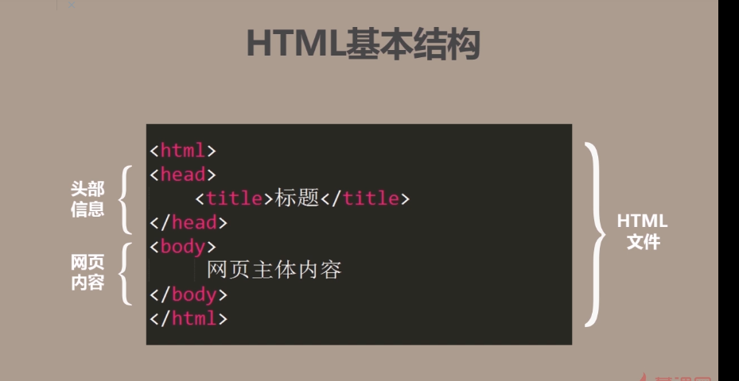
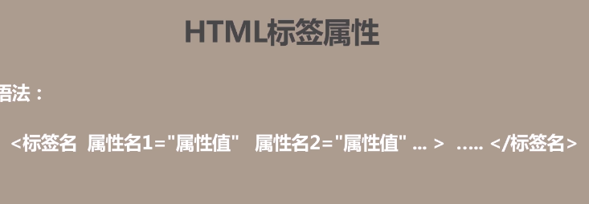

一 基本结构
1 这就是html的基本结构
 2 <!--这里写注释-->
二 文档
1 <!DOCTYPE HTML>不属于html标签，它用于定义文档类型
2 h1到h6标题标签
3 段落标签<p> </p>
align对齐属性值left right
center justify
4 <br/>换行标签
5 预格式化标签<pre> </pre>
weiewhoqirq
qweruhqore
wqrqw
wq qwrqw
9+8=17
6 下划线标签<hr/>
你娃很违和啊weuhuew
7 修饰标签和特殊符号
文字斜体:<i></i>、<em></em> 我是斜体i，我是斜体em加粗:<b></b>、<strong></strong>我是加粗b，我是加粗strong
下标:<sub></sub>我是下标sub 上标:<sup></sup>我是上标sup
二 列表标签
1 无序列表
<ul> <li> <li> <ul>ul type属性：disc square circle
例：
- html 指的是超文本标记语言
- html 不是一种编程语言 ，而是一种标记语言
- html 使用标记标签来描述网页
- html 指的是超文本标记语言
- html 不是一种编程语言 ，而是一种标记语言
- html 使用标记标签来描述网页
- html 指的是超文本标记语言
- html 不是一种编程语言 ，而是一种标记语言
- html 使用标记标签来描述网页
- html 指的是超文本标记语言
- html 不是一种编程语言 ，而是一种标记语言
- html 使用标记标签来描述网页
2 有序列表ol
ol 和li 表示ol的type 属性值1 a A i I
3 定义列表
<dl><dt>定义列表项</dt>
<dd>列表项描述</dd>
<dd>列表项描述</dd>
<dt>定义列表项</dt>
<dd>列表项描述</dd>
<dd>列表项描述</dd>
...
</dl>
三 图像和超链接
1 图像img标签
绝对路径和相对路径要分清
2 链接 a 标签
3 连接属性
空连接设置href="#"超链接属性
4 锚链接
5 扩展 邮箱和文件下载
- 下载文件要压缩
- 直接写下载的文件名会打开文件